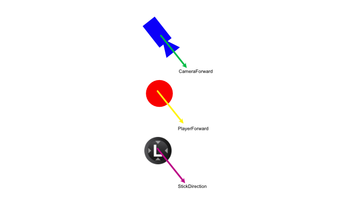
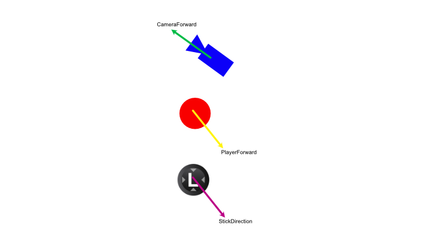
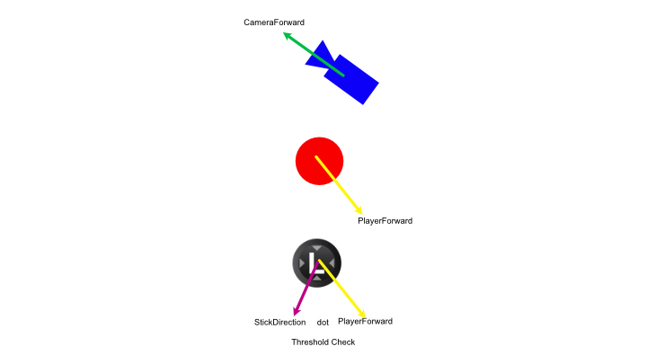

ROBERT LI >>> VESSELtechnical game designer |
|||
| Discord |
There are many instances in the game where the player need to either: maintain walking in a straight line after a camera switch, and slightly maneuver the direction after a camera switch
In the early version of the game, the forward vector of the player character would immediately update after camera switches.
Imagine two cameras facing each other. Let's say the player is walking away from camera one, and they decide to switch to camera two. The player forward camera would immediately switch to the forward vector of the new camera.
The gif above demonstrates the issue.
It's not a severe problem, the game would still be playable without improving the player controller.
But the fluidity of the game feel would be compromised if I don't address it and find a clever solution.
The first step to solve this issue is to identify when exactly does the player forward vector need to be updated:

The forward vector of each camera, this is the vector that will become the forward vector of the player character depending on which camera the player is looking at
This vector determines which direction is forward with respect to the camera position.
This is the input vector. This vector gets translated into movement based on the PlayerForward vector.

When the player switch to a new camera, depending on the following two things, the game will then decide whether to update the PlayerForward or not:

When the player switches to a new camera, and the player character is moving, the game starts to check if the dot product of the stickDirection and playerForward exceeds a threshold.
If the dot product exceeds the threshold, then the game would lerp the old playerForward vector to the new cameraForward vector.